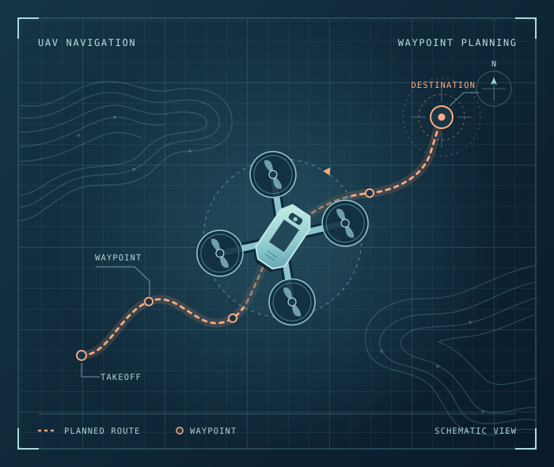

本体指令执行
在船体侧对接推进和转向指令。海钓船在有风浪的近海完成 3 小时稳船测试。
CAN / RS-485 · 推进与转向
海钓船用顶流机
丁彬 本体执行与实机联调
在职负责机器人本体的指令执行与文件适配。在校独立完成无人机导航、AGV 融合导航和视觉送药小车。

02 ENGINEERING STACK
在船体侧对接推进和转向指令。海钓船在有风浪的近海完成 3 小时稳船测试。
适配机器人本体文件，配合联调底盘行走、升降和拍摄动作。系统已用于正式排水管道检测。
在校园 AGV 中接入激光雷达、IMU 和编码器，用 EKF 融合传感器观测，实车完成 200 米连续运输。
用 OpenCV 和 OCR 识别病房号，在模拟医院验证出发、到站、卸药和返程。
03 BACKGROUND
求职方向 · ROS1 / ROS2 机器人软件开发
我的工作涉及海钓船稳船、无人船布网和管道巡检，负责本体侧的指令执行与文件适配。毕业设计中，我独立开发了 ROS 自主导航无人机，从 Gazebo 仿真联调推进到实飞验证。
广州市逐电科技有限公司
江西师范大学科学技术学院
嵌入式赛项
芯片应用赛道